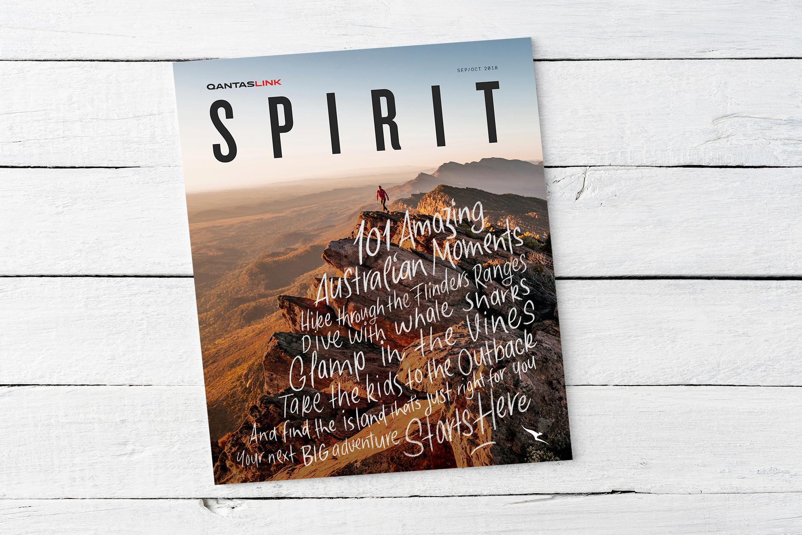

Spirit magazine launch
Qantas Link
We launched this bi-monthly in-flight magazine for the Qantas Link regional network, focusing on the less-travelled routes and destinations. As well as travel advice we also covered subjects relevant to regional Australia, such as mining, farming and conservation.
Spirit magazine spreads